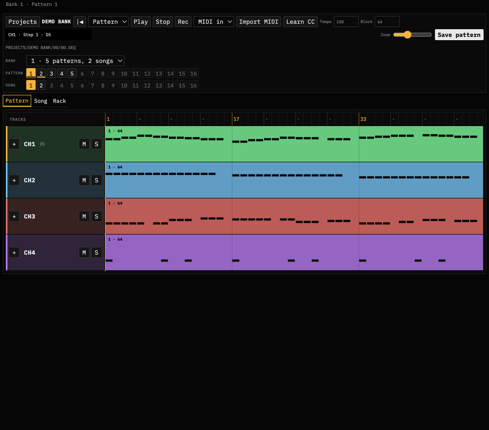
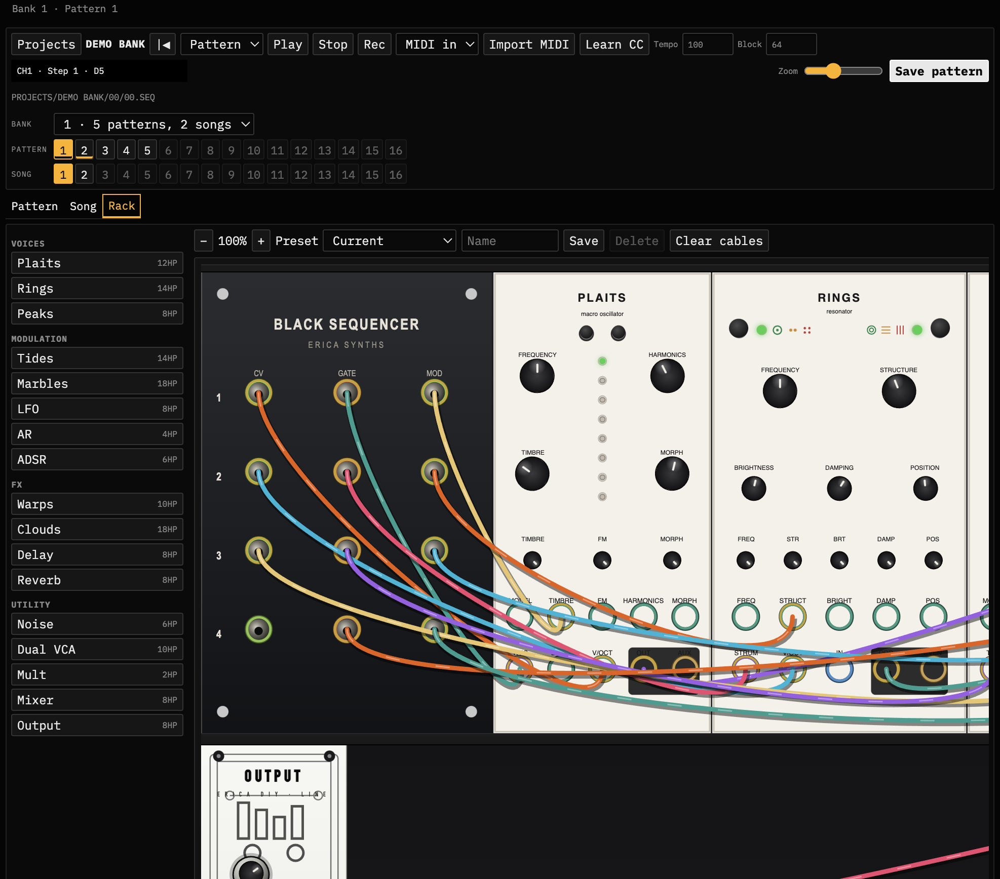
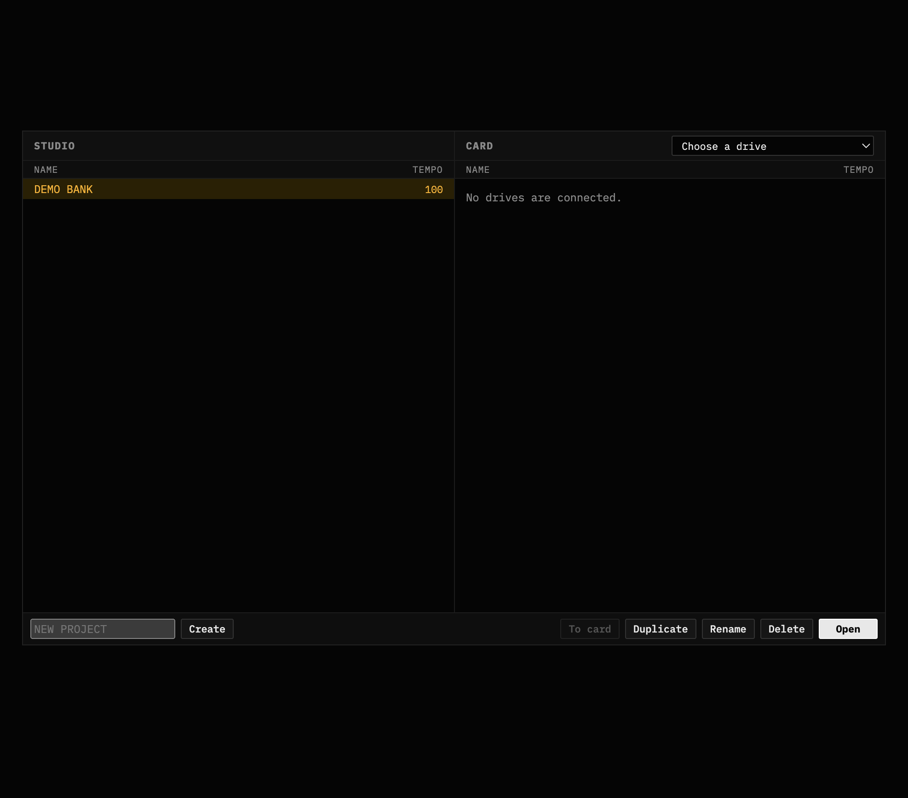

Four-channel pattern editor
Paint gates and notes across CH1–4, expand a channel for the piano roll, mute/solo per lane, and save straight back to `.SEQ` on disk.

Black Sequencer
A local companion for Erica Synths Black Sequencer SD projects — patterns, songs, MIDI in, and a Mutable Instruments preview voice so you can hear what you write.
Paint gates and notes across CH1–4, expand a channel for the piano roll, mute/solo per lane, and save straight back to `.SEQ` on disk.
Factory voice: Plaits lead, Rings pads, Plaits bass, Peaks drums — cable them how you like. Preview audio is a working sketch, not a hardware clone.

Keep projects in a local studio library, then push to a mounted SD volume that already has `PROJECTS/`. Duplicate, rename, delete without leaving the editor.

macOS app from the latest GitHub Release. First launch seeds the demo bank into Application Support.
Not on a Mac, or prefer source? Install Python deps and run python3 -m blackseq --desktop from the repo — same UI on Linux and Windows.